Intro
I am a Data Professional working at the intersection of mathematics, technology, and human insight, where data transforms into understanding and patterns become meaningful decisions.
My work focuses on data analysis, machine learning, and modern AI systems. Using tools such as SQL, Python, and visualization platforms, I translate complex datasets into clear insights and build models that support intelligent decision-making.
I believe data science is more than technical analysis—it is the process of exploring uncertainty, discovering patterns, and designing systems that help people understand the world through data.
This portfolio represents my journey in data and AI a place where mathematics meets minimal design, and analytical thinking turns raw information into clarity.
Work Experience
BI Analyst – Data Science
Python Logistics LLC
Feb 2024 - Present
As a key member of the data science team, I am responsible for designing, developing, and deploying machine learning models to address complex business needs. My role involves end-to-end project execution, from data ingestion and preprocessing to model evaluation and deployment.
Key Responsibilities:
- Analyze and interpret complex datasets from various domains like pharmaceuticals and finance.
- Build and maintain robust data pipelines to extract and process structured and unstructured data for model training.
- Design and implement intelligent retrieval systems, particularly RAG-based chatbots, to provide accurate, domain-specific information.
- Ensure data integrity and evaluate model performance to deliver reliable and compliant solutions.
- Collaborate with cross-functional teams to deploy models and monitor outcomes, continuously fine-tuning them to improve efficiency and quality.
Process Associate
Syngience Business Solutions
Feb 2019 - Feb 2024
As a core contributor within the business analytics and operations team, I was responsible for managing, analyzing, and optimizing data-driven business processes to support strategic decision-making. My role involved close collaboration with cross-functional teams to ensure data accuracy, streamline workflows, and enhance reporting efficiency through automation and analytics.
Key Responsibilities:
- Maintained the integrity of high-stakes legal and trademark datasets for Fortune 100 clients, ensuring 99%+ accuracy in global brand protection databases.
- Executed rigorous Data Quality Assurance (DQA) protocols, identifying and resolving data anomalies within AI-generated trademark monitoring streams.
- Leveraged proprietary data management systems to validate complex trademark filings, mitigating legal risks for global brands like Apple and Nike.
- Optimized data workflows by managing high-volume data streams (1,000+ entries/day), significantly reducing the turnaround time for client reporting.
- Maintaining operational records, assisting in report generation, and ensuring the integrity of process documentation.
- Working and communicating effectively with other team members or departments to ensure smooth, efficient, and aligned workflow across the organization.
Projects
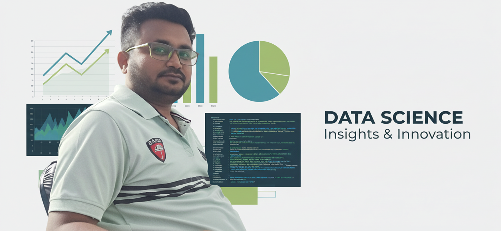
Projects During Study
-
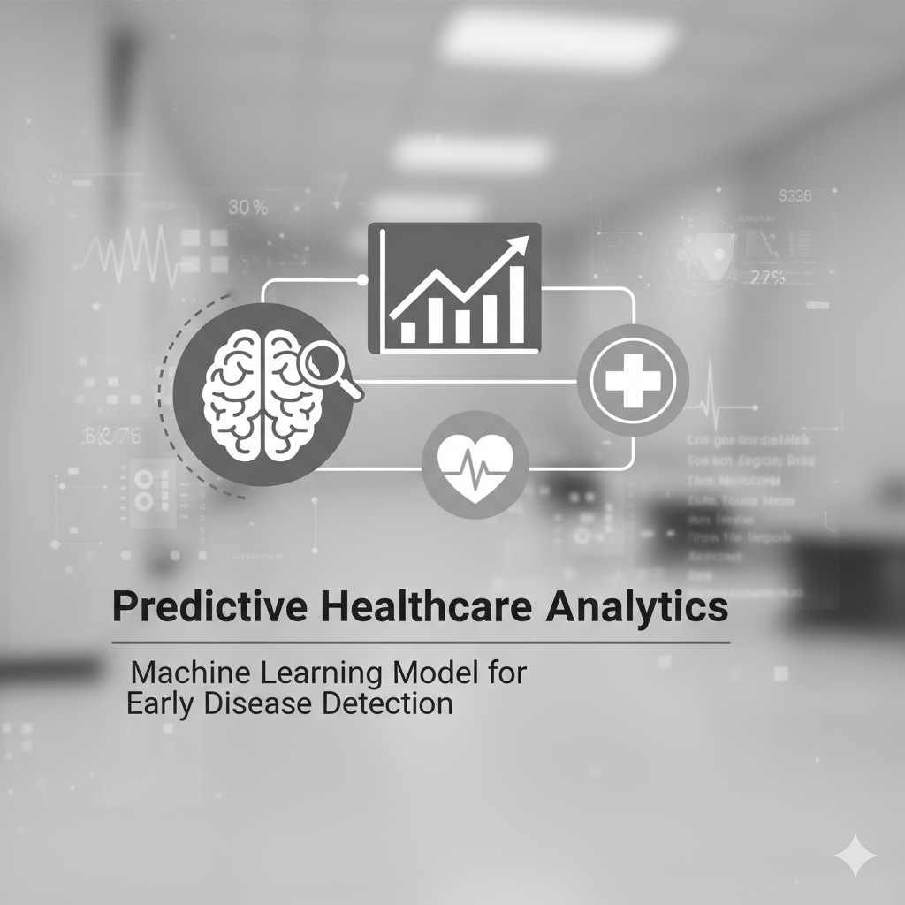
Predictive Healthcare Analytics
Machine Learning Model for Early Disease DetectionGitHub
-
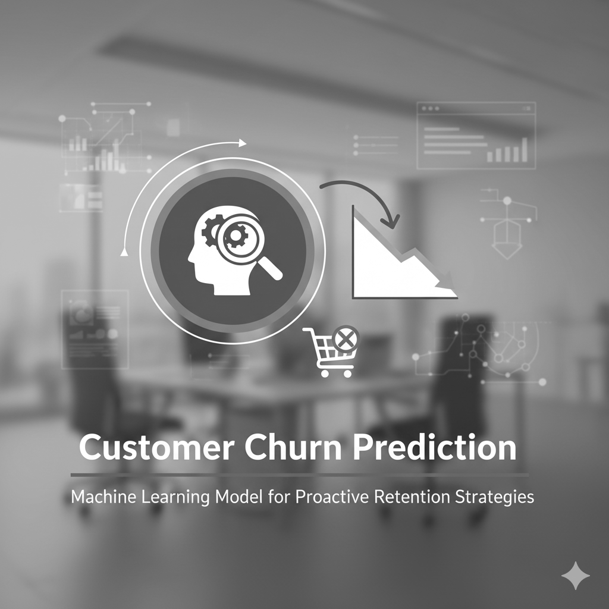
Customer Churn Prediction
Machine Learning Model for Proactive Retention StrategiesGitHub
-
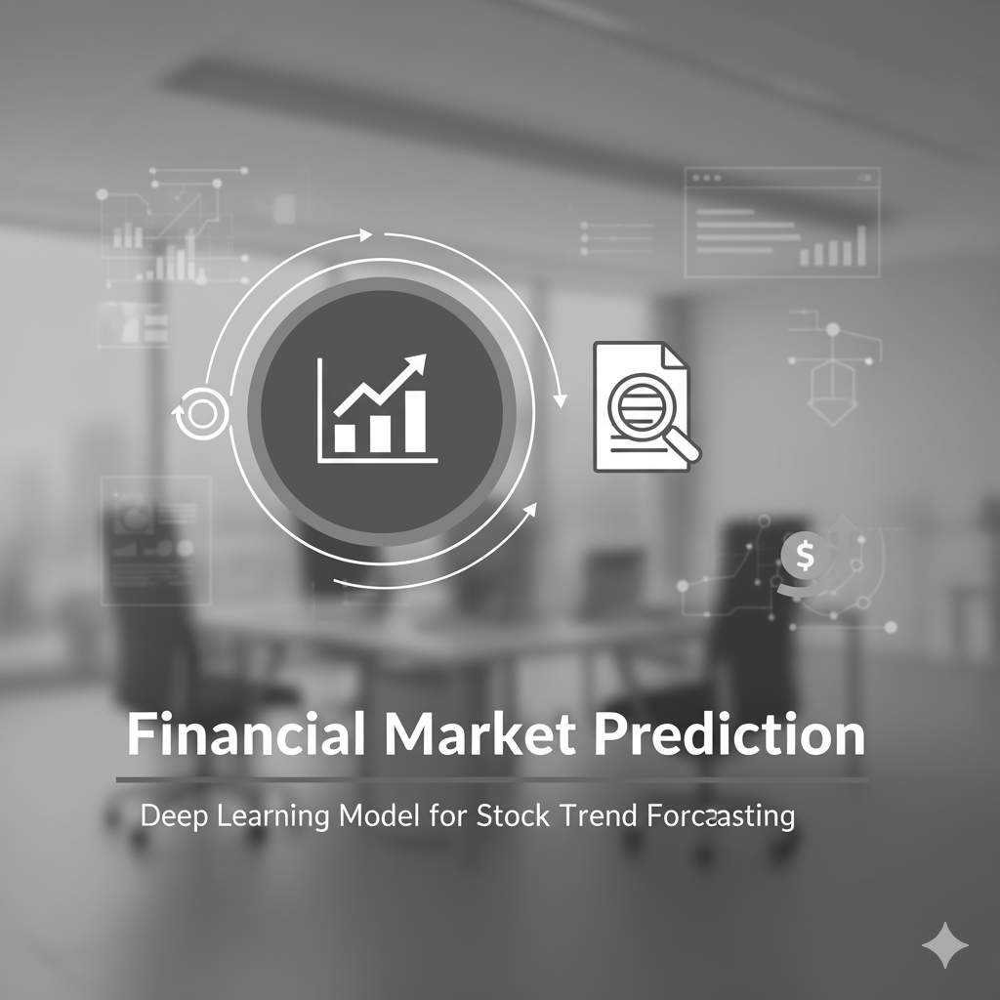
Financial Market Prediction
Deep Learning Model for Stock Trend ForecastingGitHub
-
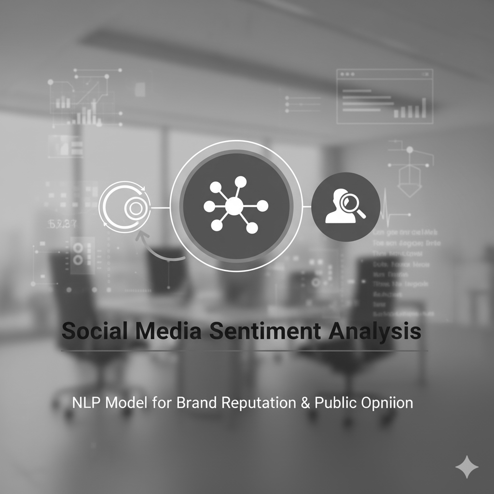
Social Media Sentiment Analysis
NLP Model for Brand Reputation & Public OpinionGitHub
-
Fraud Detection System
Machine Learning Model for Real-time Transaction SecurityGitHub
-
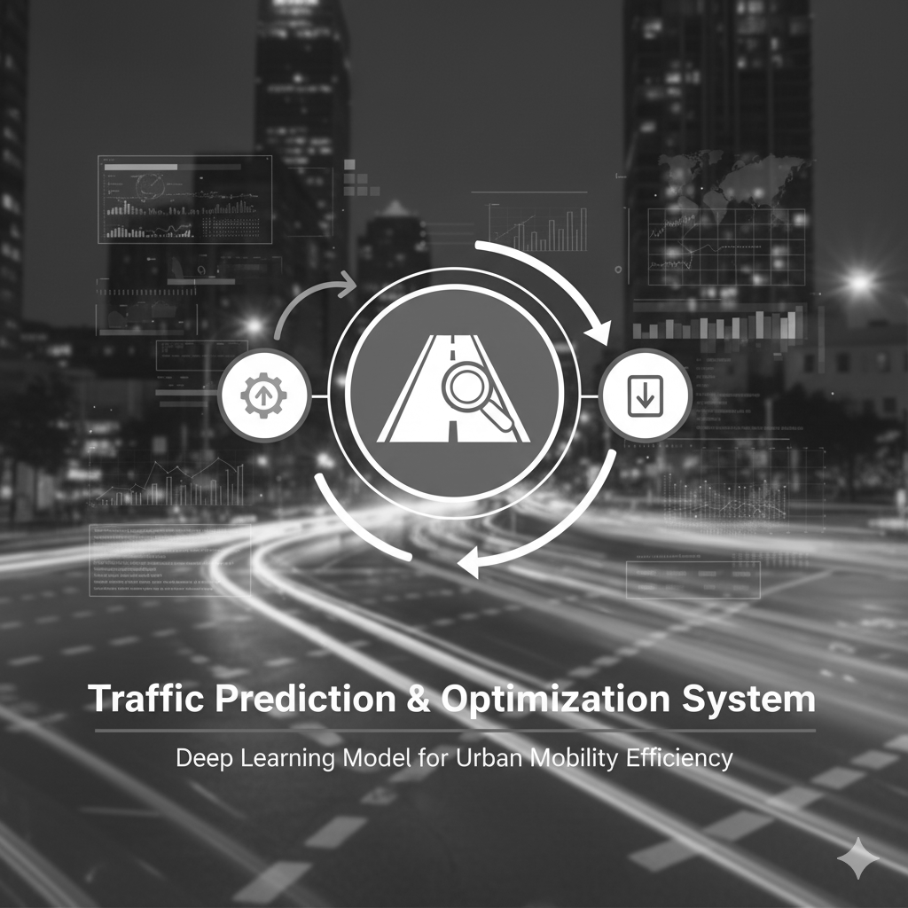
Traffic Prediction & Optimization System
Deep Learning Model for Urban Mobility EfficiencyGitHub
-
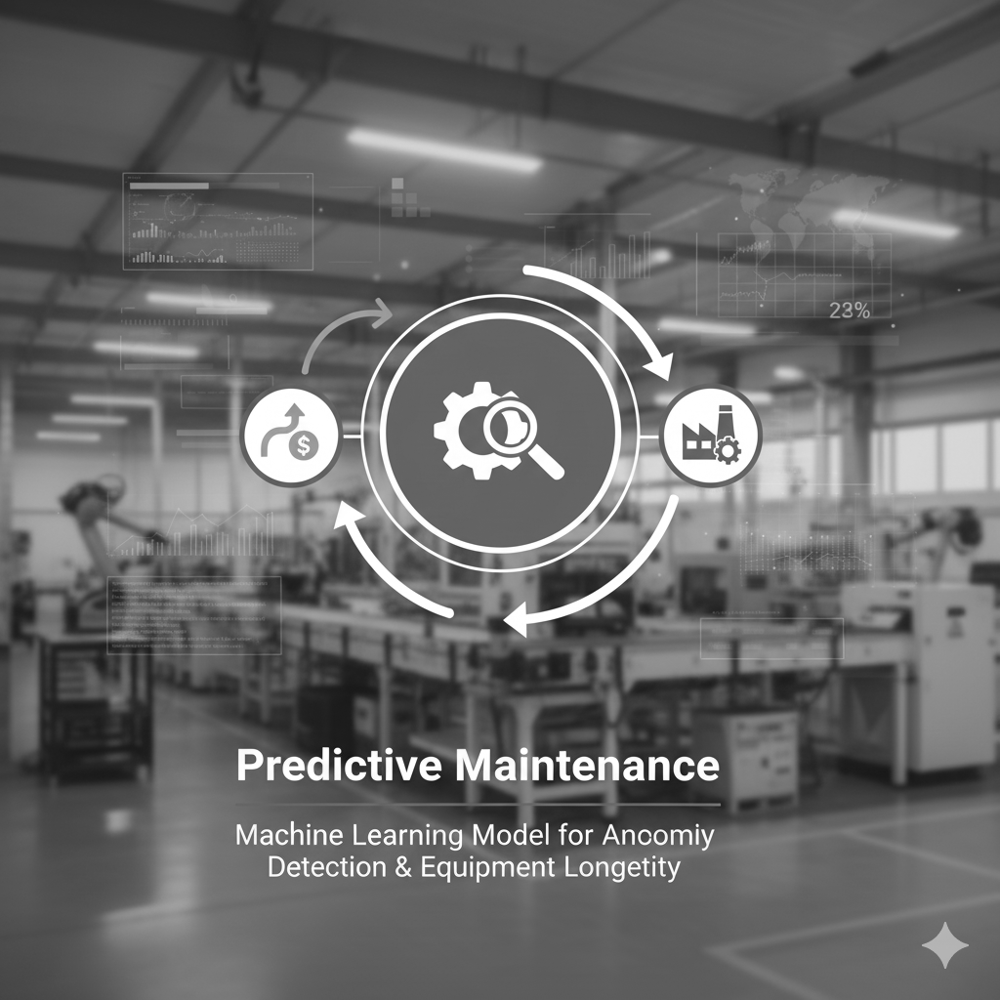
Predictive Maintenance
Machine Learning Model for Anomaly Detection & Equipment LongevityGitHub
-
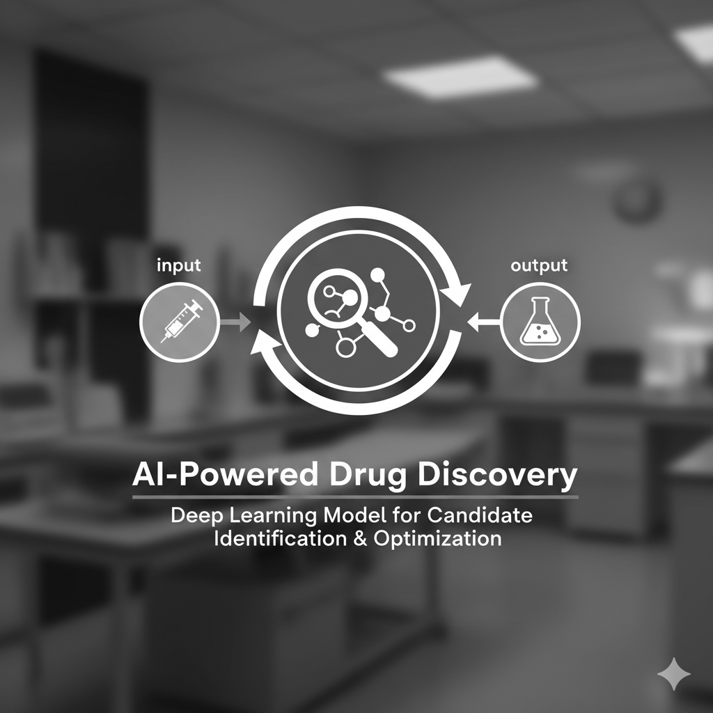
AI-Powered Drug Discovery
Deep Learning Model for Candidate Identification & OptimizationGitHub
-
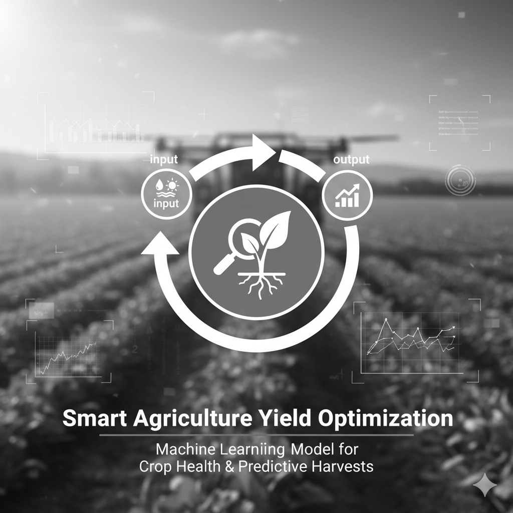
Smart Agriculture Yield Optimization
Machine Learning Model for Crop Health & Predictive HarvestsGitHub
-
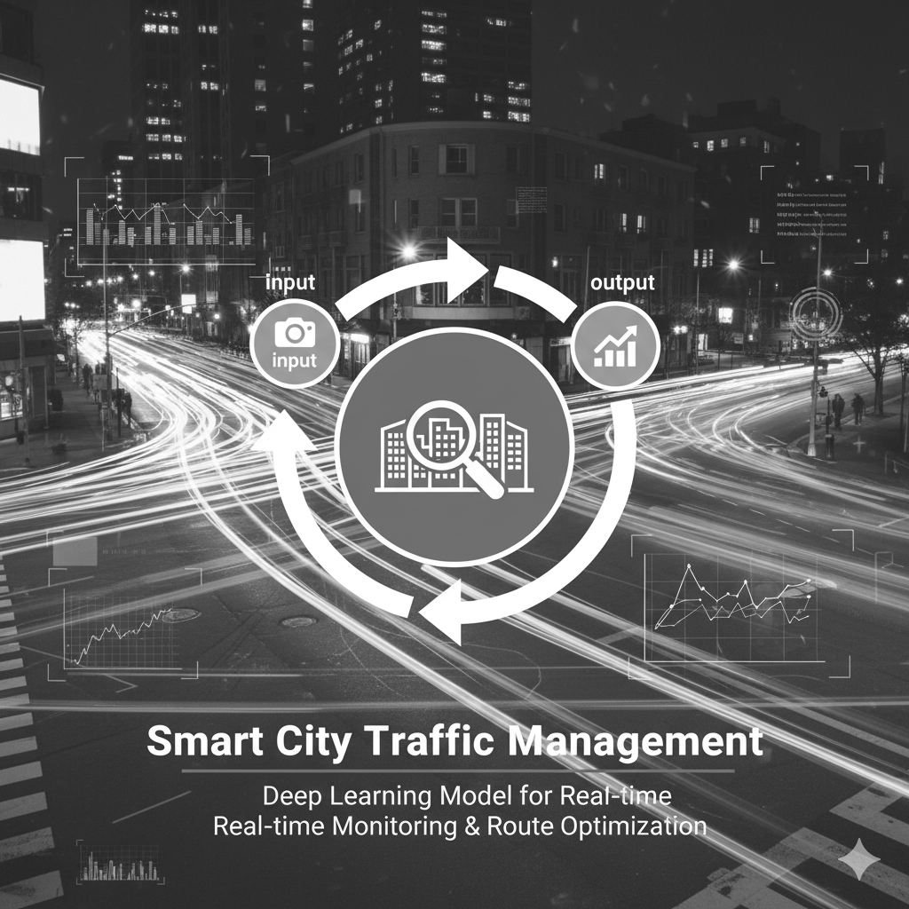
Smart City Traffic Management
Deep Learning Model for Real-time Monitoring & Route OptimizationGitHub
Personal Projects
-
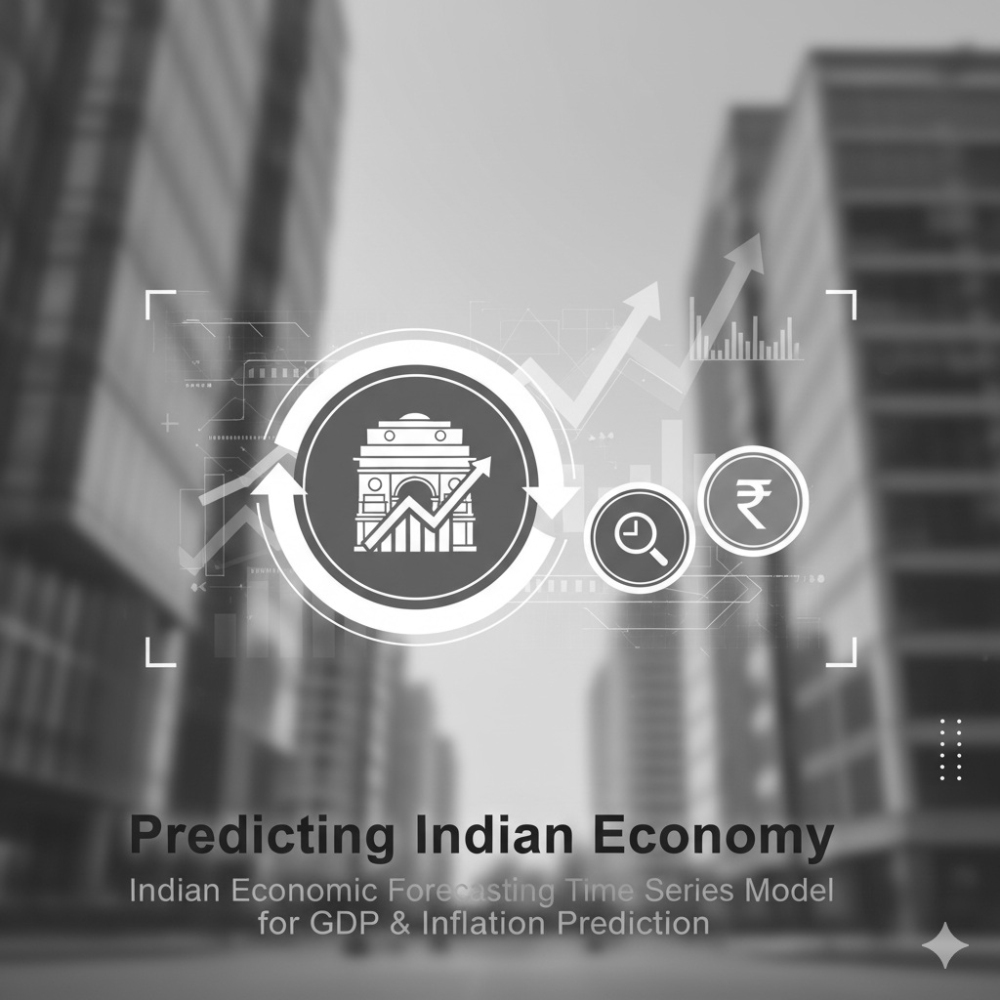
Predicting Indian Economy
Indian Economic Forecasting Time Series Model for GDP & Inflation PredictionGitHub
-
Solution for Offline Sellers
Offline Retail Analytics Data-Driven Model for Inventory & Sales OptimizationGitHub
Blogs
I enjoy writing about new technologies and sharing my knowledge with the community. Here are some of my articles on Medium.
About
I am a Data Professional shaped by two complementary worlds: the precision of mathematics and the evolving intelligence of artificial intelligence. My work primarily focuses on data analysis and statistical reasoning, where I aim to transform complex datasets into structured insights that support better decision-making. I also maintain a growing interest in machine learning and modern AI systems.
Academically, I hold an MCA in Artificial Intelligence and an M.Sc in Mathematics. This combination forms the foundation of my analytical thinking and problem-solving approach, allowing me to bridge mathematical reasoning with practical data-driven applications.
Beyond technology, I draw inspiration from philosophy, modern science, and visual minimalism. I enjoy exploring books, films, and ideas that challenge conventional thinking and expand perspectives, often influencing how I approach problems in data and analytics.
At the core, I believe every dataset tells a story about patterns, decisions, and human behavior. My goal is to use analytical thinking and data-driven methods to bring clarity to complexity and transform information into meaningful understanding.